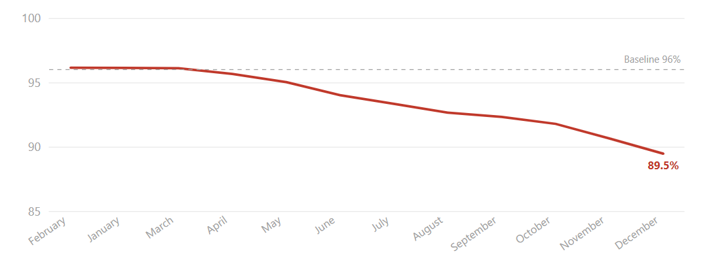
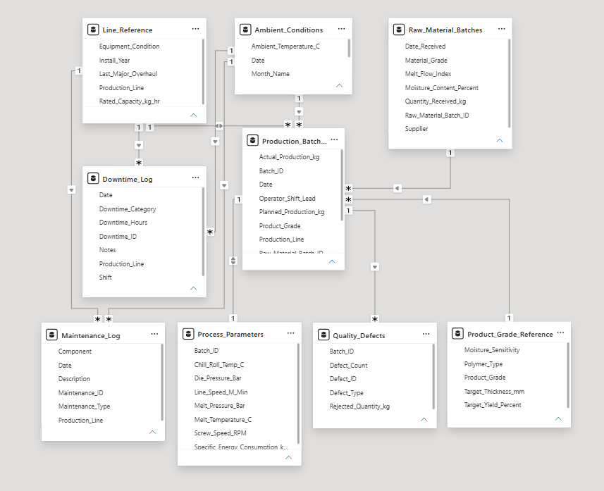
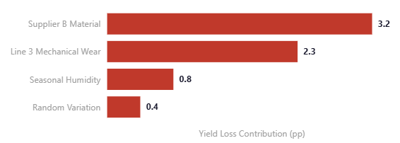

Investigating the Hidden Root Causes Behind a 6.7pp Yield Loss in a Polymer Plant Using Power BI
Problem
A PP/PET sheet extrusion facility running 4 production lines across 3 shifts observed its plant-wide yield slide from 96.1% to 89.5% over 12 months — that's a 6.7 percentage point drop showing no sign of leveling off.
Scrap output climbed, driving up the costs. The plant management had no single view to explain what was driving the decline.

Plant-wide yield decline, February to December
The mandate: identify what was driving the yield loss, quantify each contributing factor, and prioritize the actions needed to recover it.
Challenges
- Fragmented data Yield, defects, supplier records, downtime, maintenance history, and ambient conditions were spread across 10 disconnected tables, with no unified view linking operational events to production outcomes.
- Misleading surface pattern Defect rates increased during the humid months each year, closely mirroring humidity levels — it seemed convincing enough to be the primary cause on its own.
- Confounding variables A new raw material supplier was introduced around the same time one production line's performance began to decline, making it difficult to tell whether the yield loss stemmed from one issue or two.
- Analytical difficulty None of the 3 suspected factors — material, mechanical, or seasonal — stood out in isolation. Each was partially masked by the others, while plant-wide averages obscured important differences between production lines.
Approach

The consolidated star schema linking all data sources
- Established the investigation objective: quantify the yield loss and identify actionable root causes.
- Selected Power BI as the analysis platform — already familiar to plant teams, minimizing adoption friction.
- Consolidated 10 disconnected data sources into a single star schema, linking batches, materials, defects, downtime, maintenance, and environmental conditions.
- Built 10 purpose-built DAX measures to isolate key variables.
- Structured the dashboard around departmental workflows, giving production, quality, maintenance, and leadership dedicated views tailored to their decisions.
- Enabled drill-through and cross-filtering, allowing users to move from high-level KPIs to the underlying evidence without separate reports.
- Translated the findings into a prioritized action plan ranked by potential yield recovery.
Insights
- The problem was concentrated on Line 3. While other lines stayed within 4 percentage points of baseline, Line 3 fell 24 percentage points by Month 12.
- The biggest contributor to yield loss: Supplier B Introduced in Month 4, Supplier B material produced nearly 4× more defects per 1,000 kg.
- Humidity amplified the defects Surface bubble defects peaked during humid months, but the real finding was that Supplier B's material was nearly 2× more sensitive to humidity.
- Deferred maintenance quietly accelerated the decline. After maintenance was deferred in Month 6, instability tripled, downtime reached 50 hours, and energy use climbed to 0.46 kWh/kg. The delay proved costlier than the shutdown.

Yield loss contribution by root cause (percentage points)
Business Impact
The investigation transformed three hidden causes into a ranked recovery plan, with every recommendation prioritized by impact, implementation time, and expected yield improvement.
Projected recovery: 95.8% yield — recovering 94% of the loss.
The analysis showed that 6.3 of the 6.7 percentage points lost are recoverable by acting on the three root causes identified. That returns the plant to near-baseline performance within two quarters.
| Priority | Action | Recovery | Timeframe |
|---|---|---|---|
| 1 — Immediate | Requalify Supplier B by enforcing moisture and MFI limits while shifting interim volume to Supplier A | 3.2 pp | 4–6 weeks |
| 2 — Within 30 days | Complete Line 3's overdue maintenance shutdown | 2.3 pp | 5–7 days |
| 3 — Before Month 5 | Adjust dryer settings ahead of the humid season | 0.8 pp | 1 week |
Technology & Skills
- Power BI Desktop & Service
- DAX (time intelligence, normalization, cost analysis)
- Star schema data modelling
Are you still chasing hidden root causes through spreadsheets and disconnected reports?
Let's connect it, visualize it, and turn it into action.